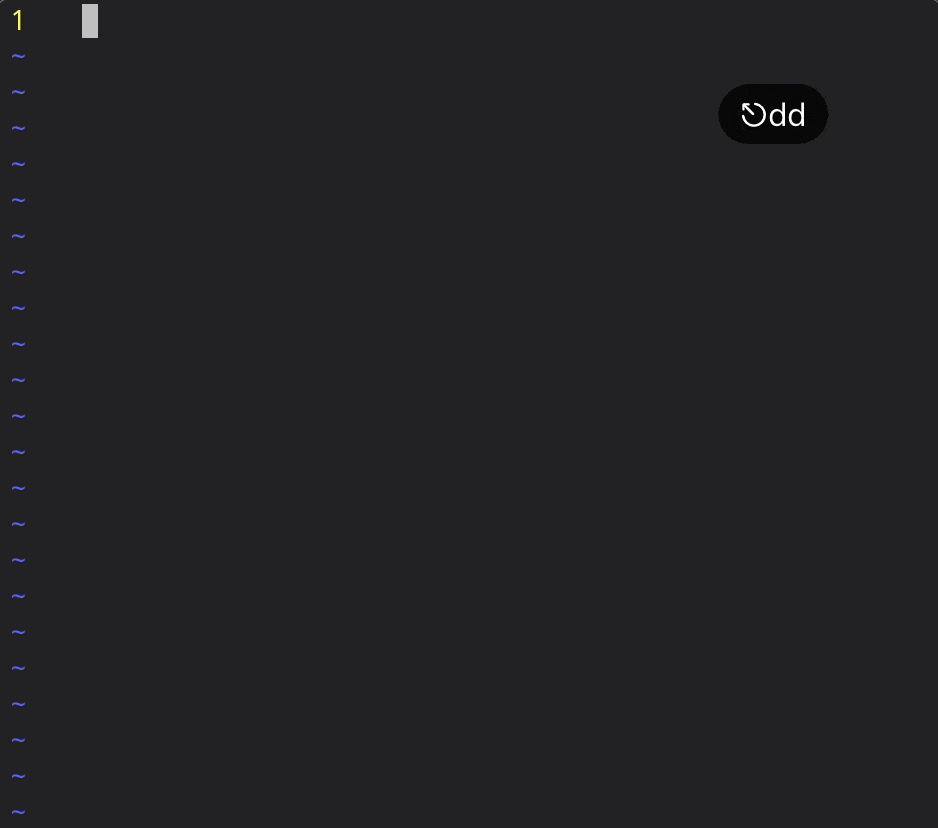

偶然听闻了事务管理神器org-mode的存在。由于它是基于Emacs的，而我对它不是很熟悉，平时主力的文本编辑器是vim。非常惊喜的是，有人写了org-mode的vim插件vim-orgmode。于是我准备学习一下它的使用。
环境
- OS: macOS v10.14.5
- Vim: v8.0
- CLI: zsh v5.7.1
- Terminal: ITerm2
安装
我使用Vundle.vim来管理vim的插件。在.vimrc的配置文件添加需要安装的相关插件
1 | call vundle#begin() |
保存并关闭文件后重新打开，输入:PluginInstall来进行安装
一些准备
在家目录下建立一个org文件夹，并在其中创建一个空的文件index.org，之后的内容都要在其中书写
在配置文件.vimrc中添加这个文件的相关信息，以及开启vim的文件类型识别功能和高亮功能
1 | syntax on |
初步尝鲜
首先，下面是一些快捷键，在vim的normal模式下输入，我这里默认为\开头
\cc改变状态\cn在下一行插入checkbox\cN在上一行插入checkbox\ct切换等级：TODO、DONE、无\cat显示全部的TODO任务 使用前需要保存文件
其次，是其结构
1 | * 第一级 |

快速跳转
}Next heading.{Previous heading.]]Next heading same level.[[Previous heading same level.g{Backward to higher level heading.g}Forward to higher level heading.
插入日期
sa手动插入激活的日期si手动插入非激活的日期pa从日历中选取激活的日期pi从日历中选取非激活的日期caa显示这周需要做的事情